フローチャート一式
FCFlowchart
TextRpgDiagrams
::
フローチャート一式
Description
none
Diagrams
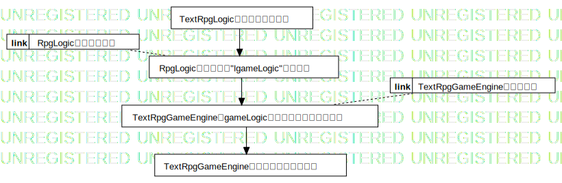
GameMain処理フロー
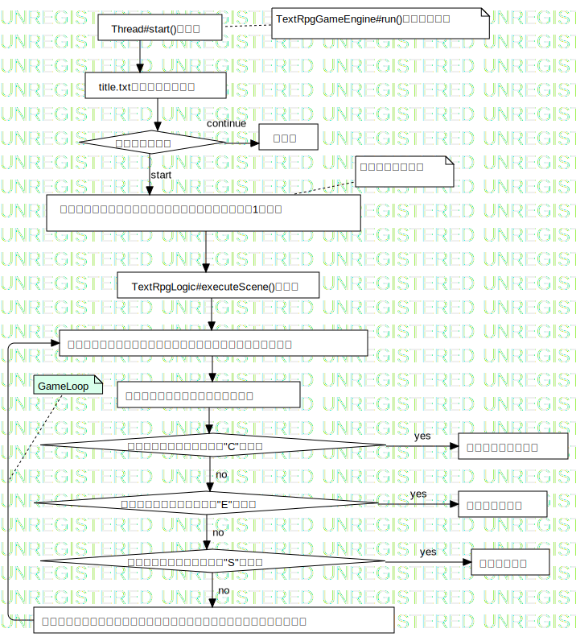
TextRpgGameEngine処理フロー
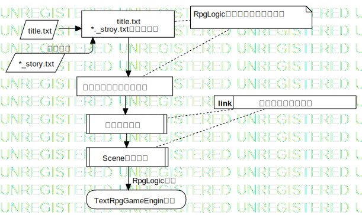
RpgLogic設定読み込み
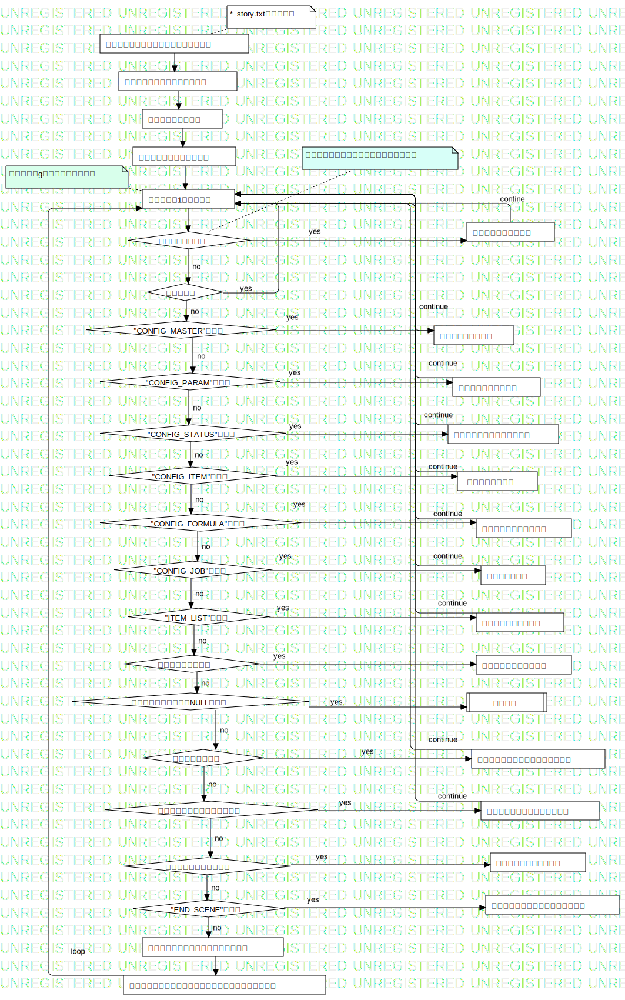
設定情報シーンオブジェクト生成
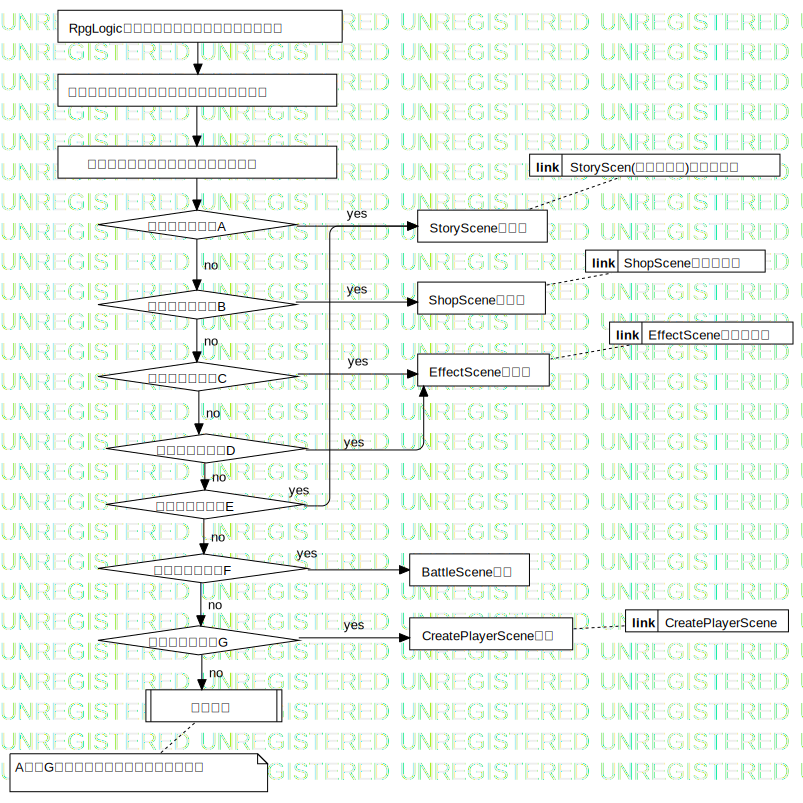
Sceneオブジェクト生成処理
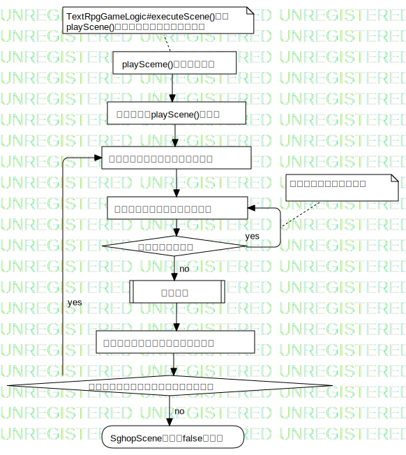
ShopScene処理フロー
StoryScen(選択肢アリ)処理フロー
CreatePlayerScene
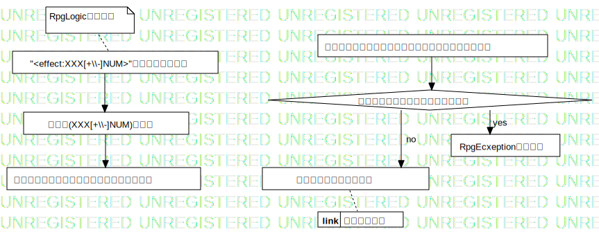
EffectScene処理フロー
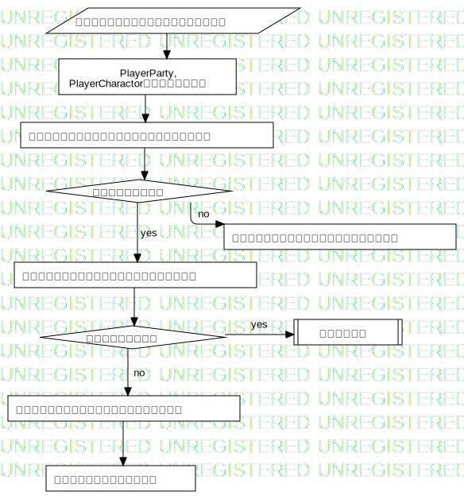
効果反映処理
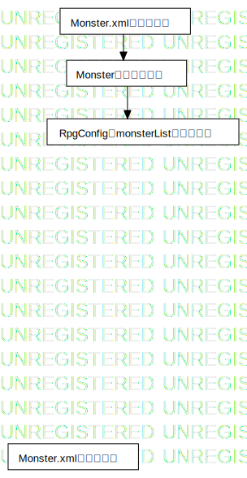
Monster生成フロー
バトルシーン処理フロー
テスト用ストーリー
Properties
Name
Value
name
フローチャート一式
Owned Elements
GameMain処理フロー
TextRpgGameEngine処理フロー
RpgLogic設定読み込み
設定情報シーンオブジェクト生成
Sceneオブジェクト生成処理
ShopScene処理フロー
StoryScen(選択肢アリ)処理フロー
CreatePlayerScene
EffectScene処理フロー
効果反映処理
Monster生成フロー
バトルシーン処理フロー
title.txt *._stroy.txtを読み込む
title.txt
*_story.txt
シーンオブジェクト生成
Scene生成処理
設定情報生成
TextRpgGameEngin生成
設定情報、シーンオブジェクト生成開始
シーンオブジェクトリスト生成
コメントリスト生成
パラメータ設定クラス生成
コメント行の場合
コメントリストに追加
空行の場合
"CONFIG_MASTER"の場合
マスタカテゴリ生成
"CONFIG_PARAM"の場合
設定オブジェクト生成
"CONFIG_STATUS"の場合
ステータスオジェクトの生成
"CONFIG_ITEM"の場合
アイテム定義生成
"CONFIG_FORMULA"の場合
計算式オブジェクト生成
"CONFIG_JOB"の場合
職業設定の生成
"ITEM_LIST"の場合
アイテムリストの生成
シーン開始行の場合
シーンオブジェクト生成
シーンオブジェクトがNULLの場合
例外処理
選択肢ありの場合
シーンオブジェクトに選択肢を追加
アイテムショップシーンの設定
アイテムショップシーンの生成
エフェクトシーンの場合
エフェクトシーンの設定
"END_SCENE"の場合
次のシーンインデックスを設定する
選択により遷移するシーンを指定する
ストーリーテキストを現在のシーンオブジェクトに追加
テキストを1行ずつ読む
RpgLogicよりストーリーテキストを読み込む
シーン開始行からシーンタイプを取得
シーンタイプがA
シーン開始行からシーンインデックスを取得
StorySceneを生成
シーンタイプがB
ShopSceneを生成
シーンタイプがC
EffectSceneを生成
シーンタイプがD
シーンタイプがE
シーンタイプがF
シーンタイプがG
CreatePlayerScene生成
BattleScene生成
例外処理
TextRpgLogicのインスタンス化
RpgLogicとして変数"lgameLogic"にセット
TextRpgGameEngineにgameLogicを渡してインスタンス化
TextRpgGameEngineのスレッドを開始する
Thread#start()の実行
title.txtの読み込みと表示
プレーヤー生成シーン実行、次シーンインデックスを1に設定
ゲーム開始選択
未実装
TextRpgLogic#executeScene()の実行
カレントシーンにセットされているシーンオブジェクトの実行
次のシーンインデックスを取得する
シーンリストより、対象のシーンオブジェクトをカレントシーンにセット
次のシーンインデックスが"C"の場合
次のシーンインデックスが"E"の場合
次のシーンインデックスが"S"の場合
ゲームクリアで終了
ゲームオーバー
保存して終了
playSceme()が実行される
ストーリーリストに追加した文言の表示
選択肢ありの場合
選択肢を表示、選択する
対象の選択肢の次シーンをセット
ストーリタイプが"A"の場合
例外処理
falseを返却する
playSceme()が実行される
親クラスのplayScene()を実行
セットされているアイテムを表示
指定範囲外の入力
選択されたアイテム番号を入力
会計処理
プレーヤのアイテムバックにセット
「ほかにようじはありますか？」を表示
SghopScene終了、falseを返却
ダイスコードの取得
ダイスコードがセットされているフラグ
ダイスコードがセットされていない例外
親クラスのplayScene()
ユーザー名を入力受付てセット
誕生日を入力受け付けてセット
プレーヤークラスを院スタン化
PlayerPartyクラスにセット
設定オブジェクトから取得したステータスマップを取得
ステータスマップの要素数分だけループ
生成した乱数を各ステータスにセット
オプショナルステータスの設定
計算式の設定
ステータスをこれで決定してよいか確認
falseを返却する
"<effect:XXX[+\\-]NUM>"で始まる行を取得
効果式(XXX[+\\-]NUM)を取得
効果式の内容をシーンオブジェクトにセット
パラメータ定義、マスタカテゴリ定義より記号を検索
効果式の内容を反映する
RpgEcxeptionを投げる
上記の定義内に対応する記号がない
(link to 効果反映処理)
(link to TextRpgGameEngine処理フロー)
(link to RpgLogic設定読み込み)
(link to 設定情報シーンオブジェクト生成)
(link to StoryScen(選択肢アリ)処理フロー)
(link to ShopScene処理フロー)
(link to EffectScene処理フロー)
(link to CreatePlayerScene)
PlayerParty, PlayerCharactorクラスを取得する
引数に「記号」「演算子」「個数」を持つ
ステータスマップから記号に対応するクラスを取得
対応するクラスなし
対応するクラスに演算子に対応する個数を処理
マスタカテゴリ、パラメータ定義より記号を検索
両方とも存在しない
効果反映処理を行うフィールド変数を取得する
例外を投げる
演算子に対応する個数を処理
Monster.xmlの読み込み
Monster.xmlの読み込み
Monsterクラスの生成
RpgConfigのmonsterListに登録する
BattleScene生成
指定のモンスターとのバトル
ストーリーテキストを読み込み<monster:XX>を見つけたとき
ランダムに指定範囲のモンスターを呼び出しバトル
バトルシーンを開始
Playerインスタンス取得
Monsterインスタンス取得
バトルシーンのステータス表示
バトルシーン定義の文言を表示する
モンスターが話す
モンスターメッセージ表示
プレーヤーコマンド表示
入力受付
プレーヤーとモンスターのAGIを比較
プレーヤーの方が大きい
プレーヤーの攻撃
モンスターの攻撃
モンスターのダメージ
プレーヤーのダメージ
HP < 0の場合
ターン終了
モンスターがHP0
経験値、落とし物の取得
ゲームオーバー
レベルアップ処理
レベルアップするか
次のシーンに移動する
プレーヤーがHP0
Monsterコマンド取得
コマンドの値変換処理(Monster)
コマンドの値変換処理(Player)
(link to CalcUtils)
FormulaMaps取得
ATKのFormula取得
DEFのFormula取得
職業マップ取得
選択したRpgJobをプレーヤーにセット
テスト用ストーリー
おじいさんとおばあさんがいる
おじいさんは山へ
おばあさんは川へ
何か発見したのはどっち？
竹から子供発見
桃から子供発見
プレーヤー生成
使者が来て勇者募集告知を受ける
勇者に応募する
ゲームオーバー
城へ行き依頼を受ける
勇者争奪戦
優勝する
準備をする
勇者として王より依頼を受ける
ゲームオーバー
冒険開始
初めの町
どの町へ？
キタのまち
ミナのまち
ヒガのまち
ニシのまち
全ての町で解く条件を満たす
魔王登場のイベント
魔王に挑みますか？
VS魔王
勝利
ゲームクリア
ゲームクリア(バットエンド)